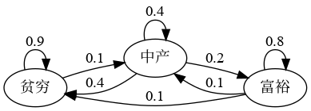
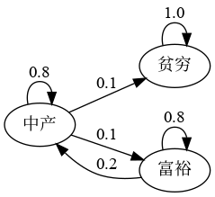
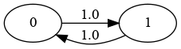

34. 马尔科夫链：不可约性与遍历性#
除了 Anaconda 中的函数库外，这个讲座还需要以下函数库：
!pip install quantecon
Show output
Requirement already satisfied: quantecon in /home/runner/miniconda3/envs/quantecon/lib/python3.12/site-packages (0.8.0)
Requirement already satisfied: numba>=0.49.0 in /home/runner/miniconda3/envs/quantecon/lib/python3.12/site-packages (from quantecon) (0.60.0)
Requirement already satisfied: numpy>=1.17.0 in /home/runner/miniconda3/envs/quantecon/lib/python3.12/site-packages (from quantecon) (1.26.4)
Requirement already satisfied: requests in /home/runner/miniconda3/envs/quantecon/lib/python3.12/site-packages (from quantecon) (2.32.3)
Requirement already satisfied: scipy>=1.5.0 in /home/runner/miniconda3/envs/quantecon/lib/python3.12/site-packages (from quantecon) (1.13.1)
Requirement already satisfied: sympy in /home/runner/miniconda3/envs/quantecon/lib/python3.12/site-packages (from quantecon) (1.13.2)
Requirement already satisfied: llvmlite<0.44,>=0.43.0dev0 in /home/runner/miniconda3/envs/quantecon/lib/python3.12/site-packages (from numba>=0.49.0->quantecon) (0.43.0)
Requirement already satisfied: charset-normalizer<4,>=2 in /home/runner/miniconda3/envs/quantecon/lib/python3.12/site-packages (from requests->quantecon) (3.3.2)
Requirement already satisfied: idna<4,>=2.5 in /home/runner/miniconda3/envs/quantecon/lib/python3.12/site-packages (from requests->quantecon) (3.7)
Requirement already satisfied: urllib3<3,>=1.21.1 in /home/runner/miniconda3/envs/quantecon/lib/python3.12/site-packages (from requests->quantecon) (2.2.3)
Requirement already satisfied: certifi>=2017.4.17 in /home/runner/miniconda3/envs/quantecon/lib/python3.12/site-packages (from requests->quantecon) (2024.8.30)
Requirement already satisfied: mpmath<1.4,>=1.1.0 in /home/runner/miniconda3/envs/quantecon/lib/python3.12/site-packages (from sympy->quantecon) (1.3.0)
34.1. 概述#
本讲座是我们之前关于马尔科夫链的讲座的延续。
具体来说，我们将介绍不可约性和遍历性的概念，并了解它们与平稳性的联系。
不可约性描述了马尔科夫链在系统中任意两个状态之间移动的能力。
遍历性是一种样本路径性质，描述了系统在长时间内的行为。
正如我们将看到的：
不可约的马尔科夫链保证唯一的平稳分布存在，而
具有遍历性的马尔科夫链可以生成满足大数定律的时间序列。
这些概念一起为理解马尔科夫链的长期表现提供了基础。
让我们从一些通常的函数库导入开始：
import matplotlib.pyplot as plt
import quantecon as qe
import numpy as np
import matplotlib as mpl
FONTPATH = "fonts/SourceHanSerifSC-SemiBold.otf"
mpl.font_manager.fontManager.addfont(FONTPATH)
plt.rcParams['font.family'] = ['Source Han Serif SC']
34.2. 不可约性#
为了解释不可约性，让我们设 \(P\) 为一个固定的随机矩阵。
如果对于某个整数 \(t\ge 0\)，\(P^t(x,y)>0\)，则称状态 \(x\) 对状态 \(y\) 是可达的。
当状态 \(x\) 和 \(y\) 彼此可达时，称它们互通。
根据我们前面讨论的，这正意味着
状态 \(x\) 最终可以从状态 \(y\) 到达，且
状态 \(y\) 最终可以从状态 \(x\) 到达。
如果所有状态都互通，则称随机矩阵 \(P\) 是不可约的，即对于所有 在 \(S \times S\) 空间中的 \((x, y)\)，\(x\) 的 \(y\) 互通。
Example 34.1
例如，考虑下面虚构的一组家庭的财富状况转移概率。
我们可以将其转化为一个随机矩阵，用0填充对应节点之间没有边线连接的地方。
从图中可以看出，这个随机矩阵是不可约的：我们可以最终（步数足够大）从其中任何状态到达任何其他状态。
我们还可以使用 QuantEcon.py 的 MarkovChain python类来测试这一点：
P = [[0.9, 0.1, 0.0],
[0.4, 0.4, 0.2],
[0.1, 0.1, 0.8]]
mc = qe.MarkovChain(P, ('poor', 'middle', 'rich'))
mc.is_irreducible
True
Example 34.2
这是一个更加悲观的情景，贫困者永远保持贫困。
这个随机矩阵不是不可约的，因为例如，富有状态无法从贫困状态直接到达。
让我们确认这一点：
P = [[1.0, 0.0, 0.0],
[0.1, 0.8, 0.1],
[0.0, 0.2, 0.8]]
mc = qe.MarkovChain(P, ('poor', 'middle', 'rich'))
mc.is_irreducible
False
你可能已经明白，不可约性在长期结果中非常重要。
例如，在第二个图中，贫困是一种终身的困境，但在第一个图中不是。
我们稍后会回到这个问题。
34.2.1. 不可约性与平稳性#
我们在之前的讲座 马尔科夫链：基本概念 中讨论了平稳分布的唯一性。
我们指出，当转移矩阵处处为正时，唯一性成立。
事实上，不可约性就足够了：
Theorem 34.1
如果 \(P\) 是不可约的，那么 \(P\) 只有一个平稳分布。
有关证明，请参见 [Sargent and Stachurski, 2023] 的第4章或 [Häggström, 2002] 的定理5.2。
34.3. 遍历性#
在不可约性下，还可以得到另一个重要结果：
Theorem 34.2
如果 \(P\) 是不可约的，并且 \(\psi^*\) 是唯一的平稳分布，那么对于所有 \(x \in S\)，
这里
\(\{X_t\}\) 是具有随机矩阵 \(P\) 和初始分布 \(\psi_0\) 的马尔科夫链。
\(\mathbb{1} \{X_t = x\} = 1\) 当且仅当 \(X_t = x\)，否则为0。
定理(34.1)中的结果有时称为遍历性。
该定理告诉我们，随着时间趋于无穷大，链花费在状态 \(x\) 的时间比例收敛到 \(\psi^*(x)\)。
这为我们提供了另一种解释平稳分布的方法（假设不可约性成立）。
重要的是，这一结果对于任何 \(\psi_0\) 都有效。
该定理与大数定律相关。
它告诉我们，在某些情况中，即使随机变量序列不是独立同分布，大数定律有时也成立。
34.3.1. 示例：遍历性与失业#
回顾我们关于就业/失业模型的截面解释之前讨论过。
假设 \(\alpha \in (0,1)\) 且 \(\beta \in (0,1)\)，因此不可约性成立。
我们看到平稳分布是 \((p, 1-p)\)，其中
在截面解释中，这是失业人员的比例。
根据我们最新的遍历性结果，这也是单个工人预期花费在失业状态的时间比例。
因此，从长远来看，人口的截面平均值和单个个体的时间序列平均值是一致的。
这是遍历性概念的一个方面。
34.3.2. 示例：汉密尔顿动力学#
另一个示例是我们之前讨论过的汉密尔顿动力学。
让 \(\{X_t\}\) 是由这些动力学生成的样本路径。
令在时间段 \(t=1, \ldots, n\) 内花费在状态 \(x\) 上的时间比例为 \(\hat p_n(x)\)，则有
马尔科夫链的图表明它是不可约的，因此遍历性成立。
因此，我们期望当 \(n\) 较大时，\(\hat p_n(x) \approx \psi^*(x)\)。
下图显示了当 \(x=1\) 并且 \(X_0\) 分别为 \(0, 1\) 或 \(2\) 时，\(\hat p_n(x)\) 向 \(\psi^*(x)\) 的收敛情况。
P = np.array([[0.971, 0.029, 0.000],
[0.145, 0.778, 0.077],
[0.000, 0.508, 0.492]])
ts_length = 10_000
mc = qe.MarkovChain(P)
ψ_star = mc.stationary_distributions[0]
x = 1 # 我们研究 psi^*(x) 的收敛情况
fig, ax = plt.subplots()
ax.axhline(ψ_star[x], linestyle='dashed', color='black',
label = fr'$\psi^*({x})$')
# 计算花费在状态0的时间比例，从不同的x_0开始
for x0 in range(len(P)):
X = mc.simulate(ts_length, init=x0)
p_hat = (X == x).cumsum() / np.arange(1, ts_length+1)
ax.plot(p_hat, label=fr'$\hat p_n({x})$ 当 $X_0 = \, {x0}$')
ax.set_xlabel('t')
ax.set_ylabel(fr'$\hat p_n({x})$')
ax.legend()
plt.show()
{kind=link}
你可能想尝试将 \(x=1\) 改为 \(x=0\) 或 \(x=2\)。
在这些情况下，遍历性都会成立。
34.3.3. 示例：一个周期链#
Example 34.3
让我们来看以下状态0和1的例子：
转移图表明该模型是不可约的。
请注意，这里有一个周期循环——当前状态以规则的方式在两个状态之间循环。
毫不奇怪，这种属性被称为周期性。
尽管如此，该模型是不可约的，因此遍历性成立。
以下图表进行了说明：
P = np.array([[0, 1],
[1, 0]])
ts_length = 100
mc = qe.MarkovChain(P)
n = len(P)
fig, axes = plt.subplots(nrows=1, ncols=n)
ψ_star = mc.stationary_distributions[0]
for i in range(n):
axes[i].axhline(ψ_star[i], linestyle='dashed', lw=2, color='black',
label = fr'$\psi^*({i})$')
axes[i].set_xlabel('t')
axes[i].set_ylabel(fr'$\hat p_n({i})$')
# 计算每个 x 花费的时间比例
for x0 in range(n):
# 从不同的 x_0 生成时间序列
X = mc.simulate(ts_length, init=x0)
p_hat = (X == i).cumsum() / np.arange(1, ts_length+1)
axes[i].plot(p_hat, label=fr'$x_0 = \, {x0} $')
axes[i].legend()
plt.tight_layout()
plt.show()
{kind=link}
该示例帮助强调了渐近平稳性是关于分布的，而遍历性是关于样本路径的。
在周期性链中，花费在某个状态的时间比例可以收敛到平稳分布。然而，每个状态的分布却不会收敛。
34.3.4. 示例：政治制度#
让我们回到前一讲中讨论的具有六个状态的政治制度模型，并研究其遍历性。
以下是转移矩阵：
链的图显示所有状态都是可达的，表明该链是不可约的。
在下图中，我们可视化了每个状态 \(x\) 的 \(\hat p_n(x) - \psi^* (x)\) 差异。
与前一个图不同，\(X_0\) 是固定的。
P = [[0.86, 0.11, 0.03, 0.00, 0.00, 0.00],
[0.52, 0.33, 0.13, 0.02, 0.00, 0.00],
[0.12, 0.03, 0.70, 0.11, 0.03, 0.01],
[0.13, 0.02, 0.35, 0.36, 0.10, 0.04],
[0.00, 0.00, 0.09, 0.11, 0.55, 0.25],
[0.00, 0.00, 0.09, 0.15, 0.26, 0.50]]
ts_length = 2500
mc = qe.MarkovChain(P)
ψ_star = mc.stationary_distributions[0]
fig, ax = plt.subplots()
X = mc.simulate(ts_length, random_state=1)
# 将图中心对准0
ax.axhline(linestyle='dashed', lw=2, color='black')
for x0 in range(len(P)):
# 计算每个状态的时间比例
p_hat = (X == x0).cumsum() / np.arange(1, ts_length+1)
ax.plot(p_hat - ψ_star[x0], label=f'$x = {x0+1} $')
ax.set_xlabel('t')
ax.set_ylabel(r'$\hat p_n(x) - \psi^* (x)$')
ax.legend()
plt.show()
{kind=link}
34.4. 练习#
Exercise 34.1
Benhabib 等人 [Benhabib et al., 2019] 估计了如下的社会流动性转移矩阵：
其中每个状态1到8对应于财富份额的百分位数：
矩阵记录为 P，如下：
P = [
[0.222, 0.222, 0.215, 0.187, 0.081, 0.038, 0.029, 0.006],
[0.221, 0.22, 0.215, 0.188, 0.082, 0.039, 0.029, 0.006],
[0.207, 0.209, 0.21, 0.194, 0.09, 0.046, 0.036, 0.008],
[0.198, 0.201, 0.207, 0.198, 0.095, 0.052, 0.04, 0.009],
[0.175, 0.178, 0.197, 0.207, 0.11, 0.067, 0.054, 0.012],
[0.182, 0.184, 0.2, 0.205, 0.106, 0.062, 0.05, 0.011],
[0.123, 0.125, 0.166, 0.216, 0.141, 0.114, 0.094, 0.021],
[0.084, 0.084, 0.142, 0.228, 0.17, 0.143, 0.121, 0.028]
]
P = np.array(P)
codes_B = ('1','2','3','4','5','6','7','8')
证明该过程是渐近平稳的，并计算平稳分布的近似值。
使用模拟来说明遍历性。
Solution to Exercise 34.1
第1部分：
一种选择是对转移矩阵取幂。
P = [[0.222, 0.222, 0.215, 0.187, 0.081, 0.038, 0.029, 0.006],
[0.221, 0.22, 0.215, 0.188, 0.082, 0.039, 0.029, 0.006],
[0.207, 0.209, 0.21, 0.194, 0.09, 0.046, 0.036, 0.008],
[0.198, 0.201, 0.207, 0.198, 0.095, 0.052, 0.04, 0.009],
[0.175, 0.178, 0.197, 0.207, 0.11, 0.067, 0.054, 0.012],
[0.182, 0.184, 0.2, 0.205, 0.106, 0.062, 0.05, 0.011],
[0.123, 0.125, 0.166, 0.216, 0.141, 0.114, 0.094, 0.021],
[0.084, 0.084, 0.142, 0.228, 0.17, 0.143, 0.121, 0.028]]
P = np.array(P)
codes_B = ('1','2','3','4','5','6','7','8')
np.linalg.matrix_power(P, 10)
array([[0.20254451, 0.20379879, 0.20742102, 0.19505842, 0.09287832,
0.0503871 , 0.03932382, 0.00858802],
[0.20254451, 0.20379879, 0.20742102, 0.19505842, 0.09287832,
0.0503871 , 0.03932382, 0.00858802],
[0.20254451, 0.20379879, 0.20742102, 0.19505842, 0.09287832,
0.0503871 , 0.03932382, 0.00858802],
[0.20254451, 0.20379879, 0.20742102, 0.19505842, 0.09287832,
0.0503871 , 0.03932382, 0.00858802],
[0.20254451, 0.20379879, 0.20742102, 0.19505842, 0.09287832,
0.0503871 , 0.03932382, 0.00858802],
[0.20254451, 0.20379879, 0.20742102, 0.19505842, 0.09287832,
0.0503871 , 0.03932382, 0.00858802],
[0.20254451, 0.20379879, 0.20742102, 0.19505842, 0.09287832,
0.0503871 , 0.03932382, 0.00858802],
[0.20254451, 0.20379879, 0.20742102, 0.19505842, 0.09287832,
0.0503871 , 0.03932382, 0.00858802]])
对于此模型，当 \(n \to \infty\) 时，\(P^n\) 的行收敛到平稳分布：
mc = qe.MarkovChain(P)
ψ_star = mc.stationary_distributions[0]
ψ_star
array([0.20254451, 0.20379879, 0.20742102, 0.19505842, 0.09287832,
0.0503871 , 0.03932382, 0.00858802])
第2部分：
ts_length = 1000
mc = qe.MarkovChain(P)
fig, ax = plt.subplots()
X = mc.simulate(ts_length, random_state=1)
ax.axhline(linestyle='dashed', lw=2, color='black')
for x0 in range(len(P)):
# 计算每个工人的时间比例
p_hat = (X == x0).cumsum() / np.arange(1, ts_length+1)
ax.plot(p_hat - ψ_star[x0], label=f'$x = {x0+1} $')
ax.set_xlabel('t')
ax.set_ylabel(r'$\hat p_n(x) - \psi^* (x)$')
ax.legend()
plt.show()
{kind=link}
注意，花费在每个状态的时间比例收敛到对应平稳分布下该状态的概率。
Exercise 34.2
根据上述讨论，如果一个工人的就业动态遵循以下随机矩阵
其中 \(\alpha \in (0,1)\) 且 \(\beta \in (0,1)\)，那么，从长远来看，失业的时间比例将为
换句话说，如果 \(\{X_t\}\) 表示就业状态的马尔科夫链，那么当 \(m \to \infty\)， \(\bar X_m \to p\)，其中
本练习要求您通过计算 \(m\) 充分大时的 \(\bar X_m\) 来说明收敛性，并检查其是否接近 \(p\)。
会看到无论初始条件或 \(\alpha, \beta\) 的值如何，只要它们都位于 \((0,1)\) 区间内，此结论都成立。
结果应与我们在这里绘制的图类似。
Solution to Exercise 34.2
我们将以图形方式解决此练习。
图显示了对于两个初始条件 \(\bar X_m - p\) 的时间序列。
当 \(m\) 变大时，两个序列都收敛到零。
α = β = 0.1
ts_length = 3000
p = β / (α + β)
P = ((1 - α, α), # 注意：P 和 p 是不同的
( β, 1 - β))
mc = qe.MarkovChain(P)
fig, ax = plt.subplots()
ax.axhline(linestyle='dashed', lw=2, color='black')
for x0 in range(len(P)):
# 为每个从 x0 开始的工人生成时间序列
X = mc.simulate(ts_length, init=x0)
# 计算每个 n 的失业时间比例
X_bar = (X == 0).cumsum() / np.arange(1, ts_length+1)
# 绘图
ax.plot(X_bar - p, label=fr'$x_0 = \, {x0} $')
ax.set_xlabel('t')
ax.set_ylabel(r'$\bar X_m - \psi^* (x)$')
ax.legend()
plt.show()
{kind=link}
Exercise 34.3
在 quantecon 库中，通过检查链是否形成强连通分量来测试不可约性。
另一种测试不可约性的方法是通过以下定理：
当且仅当 \(\sum_{k=0}^{n-1}A^k\) 是严格正矩阵时，\(n \times n\) 矩阵 \(A\) 是不可约的。
（参见[Zhao, 2012] 和 此 StackExchange 讨论）
根据此定理，编写一个函数来测试不可约性。
Solution to Exercise 34.3
def is_irreducible(P):
n = len(P)
result = np.zeros((n, n))
for i in range(n):
result += np.linalg.matrix_power(P, i)
return np.all(result > 0)
让我们尝试一下。
P1 = np.array([[0, 1],
[1, 0]])
P2 = np.array([[1.0, 0.0, 0.0],
[0.1, 0.8, 0.1],
[0.0, 0.2, 0.8]])
P3 = np.array([[0.971, 0.029, 0.000],
[0.145, 0.778, 0.077],
[0.000, 0.508, 0.492]])
for P in (P1, P2, P3):
result = lambda P: '不可约' if is_irreducible(P) else '可约'
print(f'{P}: {result(P)}')
[[0 1]
[1 0]]: 不可约
[[1. 0. 0. ]
[0.1 0.8 0.1]
[0. 0.2 0.8]]: 可约
[[0.971 0.029 0. ]
[0.145 0.778 0.077]
[0. 0.508 0.492]]: 不可约